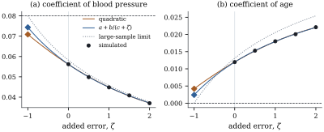

24.5 Regression calibration and SIMEX
The moment correction and IV are tied to linear moment equations. Two more portable ideas were designed for logistic, Cox and other nonlinear regressions, where they are approximations. Regression calibration replaces the unobserved regressor by its best prediction from what was observed. SIMEX watches the naive estimate deteriorate as error is added, and extrapolates back to no error. In the linear model both can be exact.
24.5.1. Regression calibration
Error is nondifferential if the
distribution of
Suppose
(a)
(b) If moreover
(c) Without distributional assumptions, let the error be classical with finite second moments. With
(d) The sample version of (c) reproduces the method-of-moments estimator exactly. If
Proof. (a) By the tower
property and nondifferential error,
(b) The law of total variance, conditioning
on
(c) The best linear predictor (Definition 6.11.1, Theorem 2.5.2),
with the constant among the predictors, is the
projection in
(d) With the calibrated regressors
The coordinates of
Remark (Two meanings of
“calibration”). In Section
12.5 calibration meant inverse prediction
of
The replicates estimate the error variance of the
mean reading as
import numpy as np
rng = np.random.default_rng(2401)
n = 300
age = rng.normal(55, 10, n)
x = 130 + 0.6 * (age - 55) + rng.normal(0, np.sqrt(108), n) # long-run blood pressure, sd 12
w = x[:, None] + rng.normal(0, 9, (n, 2)) # two clinic readings
y = -4 + 0.08 * x + 0.0 * age + rng.normal(0, 1.0, n) # age has no effect given x
wbar = w.mean(axis=1)
s2_ubar = np.mean((w[:, 0] - w[:, 1]) ** 2) / 4 # error variance of the mean reading
W = np.column_stack([np.ones(n), wbar, age])
S = W.T @ W / n # raw second moments of (1, wbar, age)
Suu = np.diag([0.0, s2_ubar, 0.0])
# calibration: best linear predictor of (1, x, age) from (1, wbar, age), using E(w x^T) = S - Suu
Gamma = np.linalg.solve(S, S - Suu)
x_hat = (W @ Gamma)[:, 1] # predicted long-run pressure
b_rc = np.linalg.lstsq(np.column_stack([np.ones(n), x_hat, age]), y, rcond=None)[0]
b_mom = np.linalg.solve(S - Suu, W.T @ y / n) # method of moments, Section 24.3
print("regression calibration:", b_rc.round(4))
print("method of moments: ", b_mom.round(4))24.5.2. SIMEX
Cook and Stefanski (1994) treat the naive estimator
as a black box. Data cannot be made more accurate, but
they can be made less accurate by adding
simulated error; watching the naive estimate move as the
error variance grows, we extrapolate back to zero. Let
Simulation. For each
Extrapolation. Fit a function
The remeasured error
Assume the conditions of Theorem 24.1.1(c),
with one mismeasured scalar regressor of error variance
and so does their average over
(a)
(b) every coefficient has the form
(c) if a polynomial of fixed degree is fitted by least squares to the points
Proof. The remeasured data satisfy
Definition 24.1.1
with error
So the rational form matches the limit exactly, and the rational SIMEX estimate is consistent provided the nonlinear fit is unique and continuous in the points, which we do not verify. The quadratic, a common default because it is linear in its parameters, recovers only part of the attenuation (Exercise (B1)). With several mismeasured regressors, or in nonlinear models, no simple extrapolant is exact and SIMEX is only approximately consistent. Its appeal is that it needs nothing but the naive estimator.
Apply SIMEX to the regression on the mean reading and
age, with error variance
| Coefficient | naive | SIMEX, quadratic | SIMEX, |
moment correction | truth |
|---|---|---|---|---|---|
| blood pressure | 0.0562 | 0.0709 | 0.0744 | 0.0757 | 0.08 |
| age | 0.0120 | 0.0042 | 0.0024 | 0.0018 | 0 |
The rational extrapolant nearly reproduces the moment
correction; the quadratic stops short, and by Proposition 24.5.2(c)
its large-sample limit is

from scipy.optimize import curve_fit
def naive_fits(wcol, age, y):
"""Least squares coefficients of y on (1, wcol, age) for a stack of remeasured columns."""
m, k = wcol.shape # m remeasured data sets of size k
Xs = np.stack([np.ones((m, k)), wcol, np.broadcast_to(age, (m, k))], axis=2)
XtX = np.einsum("mki,mkj->mij", Xs, Xs)
Xty = np.einsum("mki,k->mi", Xs, y)
return np.linalg.solve(XtX, Xty[:, :, None])[:, :, 0]
def simex(wbar, age, y, s2_ubar, zetas, B, rng):
"""Average naive coefficients after adding error of variance zeta * s2_ubar."""
out = [naive_fits(wbar[None, :], age, y)[0]]
for z in zetas[1:]:
extra = rng.normal(0, np.sqrt(z * s2_ubar), (B, len(y)))
out.append(naive_fits(wbar + extra, age, y).mean(axis=0))
return np.array(out) # one row per zeta
def rational(z, a, b, c):
return a + b / (c + z)
zetas = np.array([0.0, 0.5, 1.0, 1.5, 2.0])
G = simex(wbar, age, y, s2_ubar, zetas, 200, np.random.default_rng(2450))
est_quad, est_rat = [], []
for j in [1, 2]: # coefficient of x, of age
est_quad.append(np.polyval(np.polyfit(zetas, G[:, j], 2), -1.0))
p, _ = curve_fit(rational, zetas, G[:, j], p0=[0.0, G[0, j], 1.5], maxfev=20000)
est_rat.append(rational(-1.0, *p))
print("naive (zeta = 0): ", G[0, 1:].round(4))
print("SIMEX, quadratic: ", np.round(est_quad, 4))
print("SIMEX, rational: ", np.round(est_rat, 4))24.5.3. Which correction?
In the linear model the moment correction and
regression calibration coincide, rational SIMEX agrees
up to simulation noise, and IV trades precision for not
needing an error variance. Beyond it, only regression
calibration and SIMEX carry over. All rest on
information from outside the regression of
24.5.4. Exercises
A. Check your understanding
In simple regression without
B. Practice
In simple regression with reliability
Solution. The quadratic through
three equally spaced points is determined by the forward
differences. Written as
A validation subsample of
C. Going deeper
Simulate a logistic regression